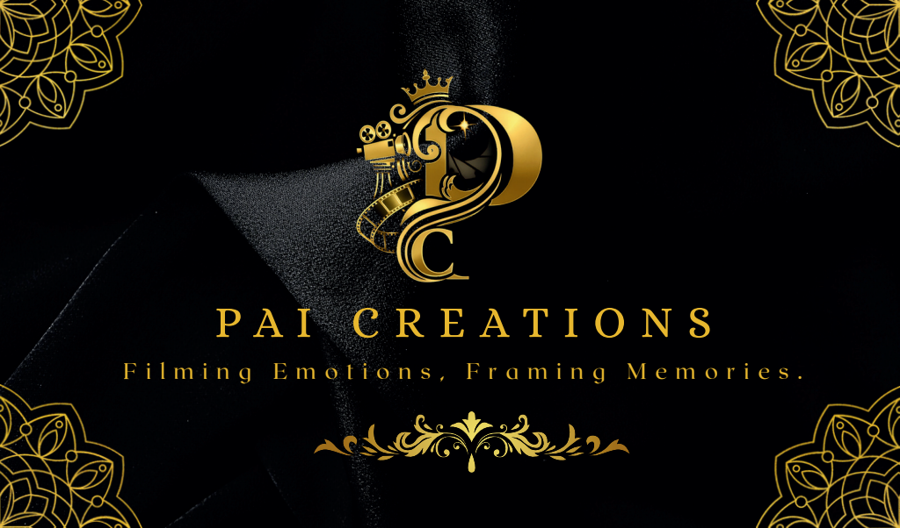
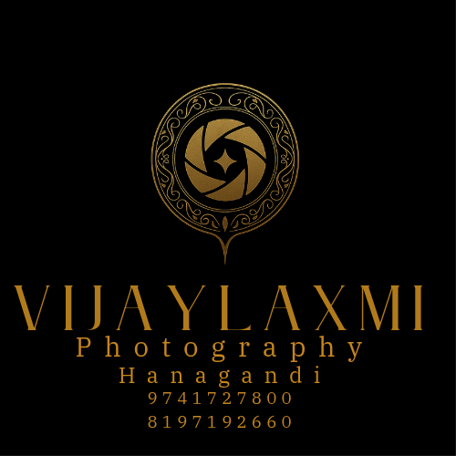

Modernizing Tradition:
Out-of-the-Box Brand
Architectures & Print Design
I. Premium Business Identity

II. Logo & Brand Architecture

III. Large Format Print (Posters)
The Client Profiles
This graphic design case study outlines the development of comprehensive brand identities for two distinct creative domains requiring a departure from generic industry tropes:
Premium Video Production House
A media entity seeking an out-of-the-box corporate identity. Unlike typical production companies that lean heavily on basic tech typographies, this client required an elegant fusion of physical production elements—such as camera geometry—integrated seamlessly into a modern, high-end logomark.
Carnatic Classical Singer
A world-class vocal artist requiring a complete visual rebranding. The objective was to honor a centuries-old, rich musical tradition while presenting the artist’s identity through a modern premium lens, bridging historical depth with contemporary luxury.
The Creative & Technical Challenge
Designing assets that must bridge online digital distribution with high-end physical print media creates complex visual constraints:
De-Constructing Clichés
Avoiding the predictable, overused icons of both the film industry (clapperboards) and classical music (traditional instruments) to create standalone, premium art.
The Modern-Traditional Paradox
Translating deep, ancient cultural concepts into sleek, clean graphic architecture without losing the soul of the art form.
The Print Defect Risk
Eliminating post-production print errors such as pixelation, color shifting, or accidental data loss during high-volume commercial printing runs.
The Strategy & Technical Workflow
For the Production House: Instead of pasting a generic camera icon over text, I deconstructed the geometry of a cinema camera lens and body. I wove these physical elements directly into the negative space of a minimalist typographic structure, creating a modern, cohesive badge that instantly communicates professional cinema capabilities.
For the Carnatic Singer: I bypassed standard classical imagery to focus on the abstract flow of rhythm and sound waves. Using ultra-clean, flowing vector lines and luxury geometric curves, I built an elite, timeless logomark that feels like a premium contemporary fashion or lifestyle house while subtly echoing the fluid movement of classical vocals.
To ensure flawless physical production across corporate business cards and large promotional posters, the files were engineered entirely within Adobe Illustrator using strict pre-press guidelines:
Color Space Accuracy: Every document was built natively in the CMYK color profile rather than the digital RGB spectrum. This entirely prevents unexpected color shifts, ensuring that rich blacks and metallic tones translate perfectly from the screen to physical paper stock.
Structural Safety Grid: I mapped out exact 3mm bleed limits and internal cut safety perimeters. By keeping critical branding elements and typography completely clear of the "danger area," I ensured that physical guillotine trimmers would never cut off vital information during printing.
For the promotional posters, I established a clear visual hierarchy. I paired bold headline typography with spacious, structured layouts, allowing the essential event details to remain perfectly readable from a distance without cluttering the clean aesthetic.
The Real-World Impact
The resulting brand ecosystems instantly elevated the market presence of both clients. The corporate collateral delivered a powerful offline impressions engine:
"The artist and production team reported that during high-profile networking events, the premium texture and distinct design of the business cards consistently drew immediate praise, with recipients frequently stopping to ask exactly who engineered their visual brand identity."